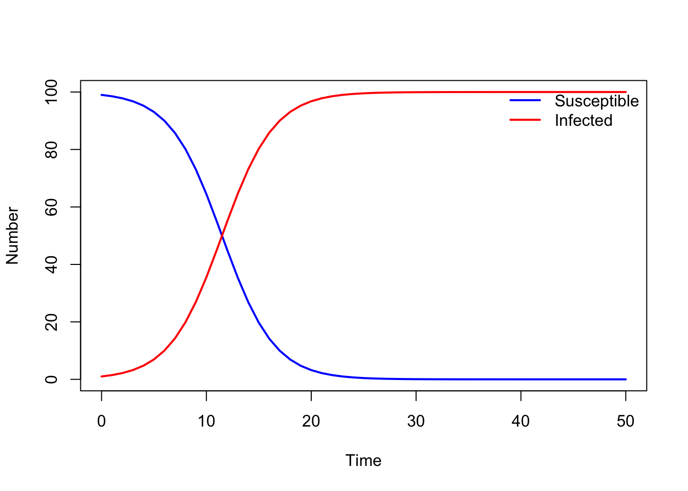

library(deSolve) # Load in the deSolve package. If the package is not installed, install using the install.packages() function
# Define model function
SI_model <- function(times, state, parms){
## Define variables
S <- state["S"]
I <- state["I"]
N <- S + I
# Extract parameters
beta <- parms["beta"]
# Define differential equations
dS <- - (beta * S * I) / N
dI <- (beta * S * I) / N
res <- list(c(dS, dI))
return(res)
}
# Define parameter values
parameters <- c(beta = 0.4)
# Define time to solve equations
times <- seq(from = 0, to = 50, by = 1)
# Define initial conditions
N <- 100
I_0 <- 1
S_0 <- N - I_0
state <- c( S = S_0, I = I_0)
# Solve equations
output_raw <- ode(y = state, times = times, func = SI_model, parms = parameters,
method = "rk4")
# Convert to data frame for easy extraction of columns
output <- as.data.frame(output_raw)
# Plot output
par( mfrow = c(1, 1))
plot( output$time, output$S, type = "l", col = "blue", lwd = 2, ylim = c(0, N),
xlab = "Time", ylab = "Number")
lines( output$time, output$I, lwd = 2, col = "red", type = "l")
legend("topright", legend = c("Susceptible", "Infected"),
lty = c(1, 1), col = c("blue", "red"), lwd = 2, bty = "n")